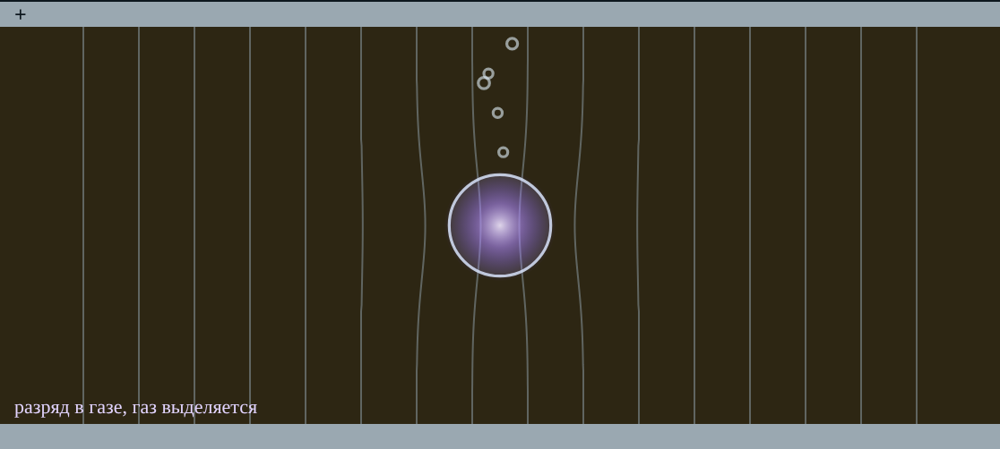

Техника высоких напряжений
Пособие студента
Тема 6. Пробой жидких диэлектриков
Разобранные примеры, задачи для самостоятельного решения, производственные кейсы и мини-опыты
| Как работать с пособием. Сначала разберите примеры (раздел 1), затем решите задачи раздела 2 — подсказки даны под каждой, ответы в конце пособия. Кейсы раздела 3 обсуждаются на занятии в группе. Мини-опыты раздела 4 выполняются в интерактиве «Пробой жидких диэлектриков»: таблицы заполняются в тетради, проверка — кнопкой «Проверить» под каждым опытом. |
1. Разобранные примеры
Пример 1. Обработка результатов испытания
Дано: шесть пробоев по ГОСТ 6581-75: 52, 47, 55, 49, 44, 53 кВ. Оборудование 10 кВ, масло сразу после заливки.
Ū = (52 + 47 + 55 + 49 + 44 + 53)/6 = 300/6 = 50,0 кВ.
Отклонения: 2; −3; 5; −1; −6; 3. Сумма квадратов 4 + 9 + 25 + 1 + 36 + 9 = 84.
S = √(84/5) = 4,10 кВ; V = 4,10/50,0 = 8,2 % ≤ 20 % — результат достоверен.
Норма ПУЭ (табл. 1.8.38) для оборудования до 15 кВ после заливки — не менее 25 кВ.
Ответ: Ū = 50,0 кВ, V = 8,2 %; масло соответствует норме. Eпр = 50/2,5 = 20 кВ/мм.
Пример 2. Сколько воды выделится при охлаждении
Дано: масло с влагосодержанием 30 г/т охлаждают с 40 °C до +2 °C. Растворимость по аппроксимации lg Ws = 7,489 − 1726/T.
При 40 °C: T = 313,15 К, lg Ws = 7,489 − 5,510 = 1,979, Ws = 95 г/т — вся вода растворена.
При +2 °C: T = 275,15 К, lg Ws = 7,489 − 6,271 = 1,218, Ws = 16,5 г/т.
В эмульсию выделится 30 − 16,5 = 13,5 г/т.
Ответ: ≈ 13 г/т эмульсии. Прочность при этом падает почти вдвое (вкладка 3: 64 → 24 кВ в учебной модели).

Рис. 1. Вкладка 3: состояние воды при +2 °C
Пример 3. Пузырёк в масляном канале
Дано: воздушный пузырёк d = 0,5 мм в масле (ε = 2,2), давление атмосферное. Рабочая напряжённость в канале 4 кВ/мм. Загорится ли пузырёк? А при вакуумной обработке, когда давление снизили до 380 мм рт. ст.?
По Пашену для p·d = 760·0,05 = 38 мм рт. ст.·см: Uпр ≈ 2,88 кВ (тема 4).
Eзаж = 2,88/(1,222·0,5) = 4,71 кВ/мм > 4 кВ/мм — не загорится.
При 380 мм рт. ст.: Uпр ≈ 1,68 кВ, Eзаж = 2,75 кВ/мм < 4 кВ/мм — загорится.
Ответ: При атмосферном давлении запас небольшой, при пониженном пузырёк загорается. Поэтому напряжение на аппарат при откачке не подают, а заливают дегазированное масло.

Рис. 2. Вкладка 2: пузырёк при напряжённости выше напряжённости зажигания
Пример 4. Промежуток острие — плоскость
Дано: Uпр масляного промежутка 5 см на 50 Гц — 150 кВ. Оцените Uпр при 10 см, n = 0,75, и среднюю прочность в обоих случаях.
U2 = 150·20,75 = 150·1,682 = 252 кВ.
Eср: 150/5 = 30 кВ/см и 252/10 = 25,2 кВ/см.
Ответ: 252 кВ; средняя прочность снизилась на 16 %.
Пример 5. Барьер
Дано: промежуток острие — плоскость 75 мм пробивается без барьера при 160 кВ. Где поставить барьер и какого напряжения ожидать (рис. 1.31)?
Оптимум Sб ≈ 0,25S = 19 мм от острия.
По рис. 1.31 Uб/Uпр ≈ 2 на 50 Гц.
Ответ: ≈ 320 кВ на 50 Гц. На импульсе выигрыш меньше (во вкладке 6 — около 1,35).

Рис. 3. Вкладка 6: Uб/Uпр от положения барьера
2. Задачи для самостоятельного решения
Ответ вводите во вкладке 8 интерактива: допуск 2–3 %. Подсказки — кнопки «подсказка» рядом с условием.
Задача 1. Средняя прочность пробы
При испытании масла по ГОСТ 6581-75 получены пробивные напряжения 48, 52, 45, 50, 47 и 46 кВ. Зазор ячейки 2,5 мм. Найдите среднюю пробивную напряжённость, кВ/мм.
Подсказки: Сначала среднее арифметическое шести значений. E = Ū/S, S = 2,5 мм.
Задача 2. Нужно ли второе заполнение
Пробивные напряжения: 42, 28, 51, 35, 22, 47 кВ. Найдите коэффициент вариации V, %.
Подсказки: Ū = 37,5 кВ. S = √(Σ(U − Ū)²/(n − 1)), n = 6. V = S/Ū·100 %. Сравните с 20 %.
Задача 3. Пузырёк 0,3 мм
В масле (ε = 2,2) плавает воздушный пузырёк диаметром 0,3 мм при атмосферном давлении. Напряжение пробоя воздуха в нём по закону Пашена — 1,93 кВ. При какой напряжённости поля в масле, кВ/мм, в пузырьке начнутся разряды?
Подсказки: Поле в пузырьке больше поля в масле в 3ε/(2ε + 1) раз. Eв = Uпр/d, Eмасла = Eв/1,22.
Задача 4. Сколько воды в эмульсии
Влагосодержание масла 60 г/т. Растворимость воды при 20 °C — 40 г/т (по учебнику). Сколько воды, г/т, находится в масле в виде эмульсии при 20 °C, если отстоя ещё нет?
Подсказки: Растворено не больше, чем растворимость. Отстой начинается примерно с 0,02 % = 200 г/т.
Задача 5. Нагреть, чтобы растворилась
Растворимость воды в масле в тренажёре: lg Ws = 7,489 − 1726/T (Ws в г/т, T в К). До какой температуры, °C, нужно нагреть масло с влагосодержанием 60 г/т, чтобы вся вода перешла в растворённое состояние?
Подсказки: Приравняйте Ws = 60: lg 60 = 1,778. T = 1726/(7,489 − 1,778), потом вычтите 273.
Задача 6. Промежуток острие — плоскость
Пробивное напряжение масляного промежутка острие — плоскость при S = 5 см — 150 кВ (50 Гц, амплитуда). Оцените Uпр при S = 20 см по формуле U = A·Sn при n = 0,75.
Подсказки: U2/U1 = (S2/S1)n. 40,75 = 2,83.
Задача 7. Где поставить барьер
Промежуток острие — плоскость в масле S = 75 мм. На каком расстоянии от острия, мм, поставить барьер из электрокартона, чтобы получить наибольший эффект на 50 Гц (по рис. 1.31)?
Подсказки: Оптимум — около четверти промежутка от острия.
Задача 8. Ячейка и бак
В ячейке ГОСТ 6581-75 масло пробивается в среднем при 60 кВ. Объём масла под сильным полем в изоляционном промежутке трансформатора больше, чем в ячейке, в 104 раз. Оцените, при каком напряжении в пересчёте на тот же зазор, кВ, пробилось бы такое масло, если разброс описывается законом Вейбулла с m = 10.
Подсказки: U ∝ (V/V0)−1/m. (104)−0,1 = 10−0,4 = 0,398.
Задача 9. Канал маслобарьерной изоляции
Масляный промежуток 60 мм разделили тремя барьерами по 3 мм на четыре одинаковых канала. Во сколько раз допустимая напряжённость в канале больше, чем в промежутке без барьеров, если Eдоп ∝ d−0,25?
Подсказки: Ширина канала d = (60 − 3·3)/4. Отношение (60/d)0,25.
3. Производственные кейсы
Прочитайте ситуацию, выберите ответ и объясните выбор. Во вкладке 7 интерактива после ответа появляется разбор и источник.
Кейс 1. Весенняя проба масла
КТП у карьера. КТП 6/0,4 кВ у карьера ГОКа. Весной, после оттепелей, пробу масла испытали в лаборатории по ГОСТ 6581-75: среднее из шести пробоев — 18 кВ. Осенью было 42 кВ. Силикагель в воздухоосушителе розовый, течей нет.
Вопрос: Что вероятнее всего произошло и что делать?
А) Пробу испытывали неправильно: весной масло всегда слабее, повторять не нужно
Б) Пробой ячейки вызван грязными электродами; трансформатор в порядке
В) Бак «дышал» через отработавший воздухоосушитель, масло набрало влагу; заменить силикагель, масло высушить или заменить, повторить пробу
Г) Масло окислилось от перегрузки; достаточно долить свежего масла
Кейс 2. Проба с мороза
Лаборатория. Пробу отобрали из трансформатора на открытой подстанции при −28 °C. Лаборант принёс банку в тёплое помещение, сразу открыл и залил масло в ячейку. Результат — 21 кВ, хотя летом было 48 кВ.
Вопрос: Где ошибка?
А) Холодную пробу открыли сразу: на холодном стекле и в масле сконденсировалась влага; банку нужно выдержать закрытой до 15…35 °C
Б) Ошибки нет: зимой прочность масла всегда в два раза ниже
В) Нужно было испытывать прямо на морозе — так ближе к условиям работы
Г) Банку надо было подогреть до 80 °C, чтобы вода испарилась
Кейс 3. Масляный выключатель после отключений КЗ
Шахтная ПС. Маломасляный выключатель 6 кВ на шахтной подстанции отключил несколько коротких замыканий. Масло в бачке потемнело, в пробе видны чёрные взвешенные частицы.
Вопрос: Чем опасно такое масло?
А) Дуга разложила масло: взвешенный углерод и газы снижают прочность; масло надо заменить, бачки промыть
Б) Опасна только пониженная вязкость, углерод безвреден
В) Ничем: в выключателе масло только гасит дугу, его прочность не важна
Г) Тёмный цвет — результат окисления, на прочность не влияет
Кейс 4. Залили без вакуума
Монтаж. Трансформатор 35 кВ после ремонта залили маслом через верхний кран без вакуума и через час включили под напряжение. Сработало газовое реле, акустический датчик зафиксировал разряды.
Вопрос: Что упустили?
А) Масло было слишком сухим, нужно было добавить воды
Б) Нужно было залить масло при −20 °C
В) Газовое реле неисправно: масло не может давать газ
Г) Воздушные пузырьки остались в изоляции и масле: нужна вакуумная заливка дегазированным маслом и выдержка перед включением
Кейс 5. Шесть пробоев — большой разброс
Испытание. При испытании по ГОСТ 6581-75 получили 42, 28, 51, 35, 22, 47 кВ. Среднее 37,5 кВ, норма для оборудования до 15 кВ после заливки — 25 кВ.
Вопрос: Можно ли записать в протокол «соответствует»?
А) Да, но только после отбрасывания минимального и максимального значений
Б) Нет: коэффициент вариации ≈ 30 % больше 20 % — по ГОСТ нужно второе заполнение и расчёт по 12 значениям
В) Да: среднее больше нормы
Г) Нет: один пробой (22 кВ) ниже нормы, масло бракуют сразу
Кейс 6. Почему разряд идёт в камень
Обогащение руды. В электроимпульсной установке кусок руды лежит в воде на двух электродах. Подают импульс с фронтом ≈ 10−7 с — и разряд проходит не по воде вдоль поверхности, а внутри куска, раскалывая его по границам минералов.
Вопрос: Почему вода не пробивается первой?
А) Вода — проводник, ток через неё не опасен
Б) Разряд идёт по кратчайшему пути, а он внутри камня
В) Порода содержит металл и всегда слабее воды
Г) На таких коротких импульсах прочность воды выше прочности породы — вольт-секундные характеристики пересекаются (инверсия)
Кейс 7. Волокна после перемотки
Ремонт. После капитального ремонта масляного трансформатора 6 кВ (замена части бумажной изоляции) масло отфильтровали центрифугой. Проба: влагосодержание 12 г/т — хорошо, но Uпр всего 27 кВ, а при визуальном осмотре в пробе видны волокна.
Вопрос: Что сделать?
А) Дочистить масло фильтр-прессом или тонкой фильтрацией от волокон: при той же влажности волокна облегчают мостики
Б) Ничего: влажность в норме, значит и масло годно
В) Добавить ингибитор окисления
Г) Нагреть масло до 100 °C
Кейс 8. Трансформатор в мороз −50 °C
Север. Резервный трансформатор на отдалённом объекте простоял отключённым неделю при −50 °C. В баке масло ТКп. Перед включением дежурный видит по маслоуказателю, что уровень «застыл».
Вопрос: В чём риск включения?
А) Масло ТКп (застывание не выше −45 °C) загустело: циркуляция и охлаждение нарушены, РПН и выключатели могут не работать; для такого климата нужно арктическое масло (АГК, не выше −60 °C) и порядок включения по инструкции завода
Б) Риска нет: на морозе прочность масла максимальна
В) Опасно только то, что масло станет проводником
Г) Нужно включить на номинальную нагрузку — масло быстро прогреется
4. Мини-опыты в интерактиве
Мини-опыт 1. Вода и волокна (Вкладка 1 «Мостик»)
Волокон нет, влагосодержание 10 г/т. Запишите Uпр (ячейка 2,5 мм, 20 °C).
Волокон «много», влагосодержание то же. Запишите Uпр.
Найдите, во сколько раз волокна снизили прочность.
Волокон нет, влагосодержание 60 г/т. Сколько воды в эмульсии? Запишите Uпр.
| Что записать | Ваше значение | Ед. |
|---|---|---|
| Uпр: 10 г/т, без волокон | кВ | |
| Uпр: 10 г/т, много волокон | кВ | |
| Отношение без волокон / с волокнами | — | |
| Эмульсия при 60 г/т и 20 °C | г/т | |
| Uпр: 60 г/т, без волокон | кВ |
Обсудите: Почему одна и та же вода опаснее в масле с волокнами? Масло с 60 г/т нагрели до 60 °C. Куда денется эмульсия и что станет с Uпр? Проверьте на вкладке 3.
Мини-опыт 2. Когда загорается пузырёк (Вкладка 2 «Пузырёк»)
Пузырёк 0,5 мм, давление 760 мм рт. ст. Запишите напряжённость зажигания в масле.
Снизьте давление до 380 мм рт. ст. (неполный вакуум). Запишите.
Найдите отношение.
Верните 760 и уменьшите пузырёк до 0,1 мм. Запишите напряжённость зажигания.
| Что записать | Ваше значение | Ед. |
|---|---|---|
| Eзаж: 0,5 мм, 760 мм рт. ст. | кВ/мм | |
| Eзаж: 0,5 мм, 380 мм рт. ст. | кВ/мм | |
| Отношение 760 / 380 | — | |
| Eзаж: 0,1 мм, 760 мм рт. ст. | кВ/мм |
Обсудите: Почему пузырёк меньшего размера загорается при большей напряжённости? Вспомните кривую Пашена из темы 4. Зачем масло после сушки держат под вакуумом, а заливают в бак тоже под вакуумом, а не под атмосферным давлением?
Мини-опыт 3. Влажное масло на морозе и в жару (Вкладка 3 «Температура»)
Влагосодержание 30 г/т, волокон нет. Поставьте 20 °C, запишите Uпр.
Охладите до +2 °C. Запишите Uпр и сколько воды выделилось в эмульсию.
Нагрейте до 60 °C. Запишите Uпр.
Найдите отношение Uпр(60 °C)/Uпр(2 °C).
| Что записать | Ваше значение | Ед. |
|---|---|---|
| Uпр при 20 °C | кВ | |
| Uпр при +2 °C | кВ | |
| Эмульсия при +2 °C | г/т | |
| Uпр при 60 °C | кВ | |
| Отношение 60 °C / 2 °C | — |
Обсудите: Почему пробу, взятую зимой из холодного бака, нельзя испытывать сразу, не дав ей нагреться в закрытой банке? Трансформатор КТП в Апатитах ночью остывает до −25 °C, днём под нагрузкой масло +40 °C. Как меняется состояние воды в масле за сутки? Где здесь опасный момент?
Мини-опыт 4. Промежуток, полярность, объём (Вкладка 4 «Время и объём»)
Режим «Промежуток и полярность», S = 10 см. Запишите Uпр на 50 Гц и при постоянном напряжении с острием «+».
Найдите отношение.
Увеличьте S до 20 см. Запишите Uпр на 50 Гц.
Режим «Объём и площадь»: V/V0 = 104, m = 10. Запишите U/U0.
| Что записать | Ваше значение | Ед. |
|---|---|---|
| Uпр, 50 Гц, S = 10 см | кВ | |
| Uпр, постоянное, острие +, S = 10 см | кВ | |
| Отношение 50 Гц / постоянное + | — | |
| Uпр, 50 Гц, S = 20 см | кВ | |
| U/U0 при V/V0 = 104, m = 10 | — |
Обсудите: Промежуток вырос вдвое. Во сколько раз выросло Uпр? Что стало со средней прочностью U/S? Почему результат испытания в ячейке 2,5 мм нельзя прямо пересчитать на изоляцию трансформатора?
Мини-опыт 6. Где ставить барьер и сколько барьеров (Вкладка 6 «Барьеры»)
Режим «Острие — плоскость», 50 Гц. Поставьте барьер на 0,25S. Запишите Uб/Uпр.
Передвиньте барьер на 0,5S и на 0,75S. Запишите отношения.
Переключите на импульс, барьер на 0,25S. Запишите.
Режим «Маслобарьерная изоляция»: промежуток 60 мм, барьеры 3 мм. Найдите отношение Uдоп при трёх барьерах к Uдоп без барьеров.
| Что записать | Ваше значение | Ед. |
|---|---|---|
| Uб/Uпр при 0,25S, 50 Гц | — | |
| Uб/Uпр при 0,5S, 50 Гц | — | |
| Uб/Uпр при 0,75S, 50 Гц | — | |
| Uб/Uпр при 0,25S, импульс | — | |
| Uдоп(3 барьера)/Uдоп(0) | — |
Обсудите: Почему барьер вплотную к плоскости почти не помогает, а у острия — помогает? Почему на импульсе барьер даёт меньший выигрыш, чем на 50 Гц?
Мини-опыт 5. Испытание масла по ГОСТ 6581-75 (вкладка 5)
Выберите пробу «Трансформатор 10 кВ сразу после заливки». Выполните все шаги: подготовка, заполнение, выдержка 10 мин, шесть пробоев с перемешиванием и выдержкой 5 мин.
Запишите шесть значений и посчитайте Ū, S, V и Eпр. Проверьте себя в таблице под результатом.
Повторите с пробой «Выключатель 6 кВ после отключений КЗ». Если V > 20 %, сделайте второе заполнение.
Обработайте неудовлетворительную пробу кнопкой «Сушка, дегазация, фильтрация» и повторите испытание.
| Проба | U1 | U2 | U3 | U4 | U5 | U6 |
|---|---|---|---|---|---|---|
| 10 кВ | ||||||
| Выключатель | ||||||
| После обработки |
Ū, S, V, вывод о норме: ________________________________________________
5. Ответы к задачам
| № | Задача | Ответ |
|---|---|---|
| 1 | Средняя прочность пробы | 19,2 |
| 2 | Нужно ли второе заполнение | 29,9 |
| 3 | Пузырёк 0,3 мм | 5,27 |
| 4 | Сколько воды в эмульсии | 20,0 |
| 5 | Нагреть, чтобы растворилась | 29,0 |
| 6 | Промежуток острие — плоскость | 424 |
| 7 | Где поставить барьер | 18,8 |
| 8 | Ячейка и бак | 23,9 |
| 9 | Канал маслобарьерной изоляции | 1,47 |